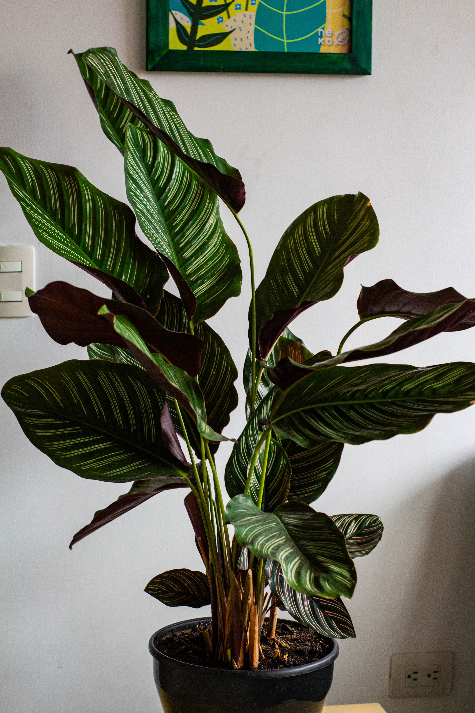
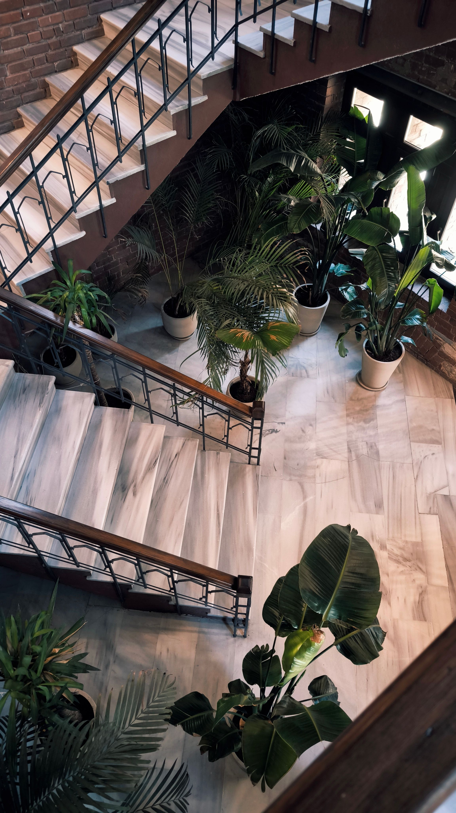
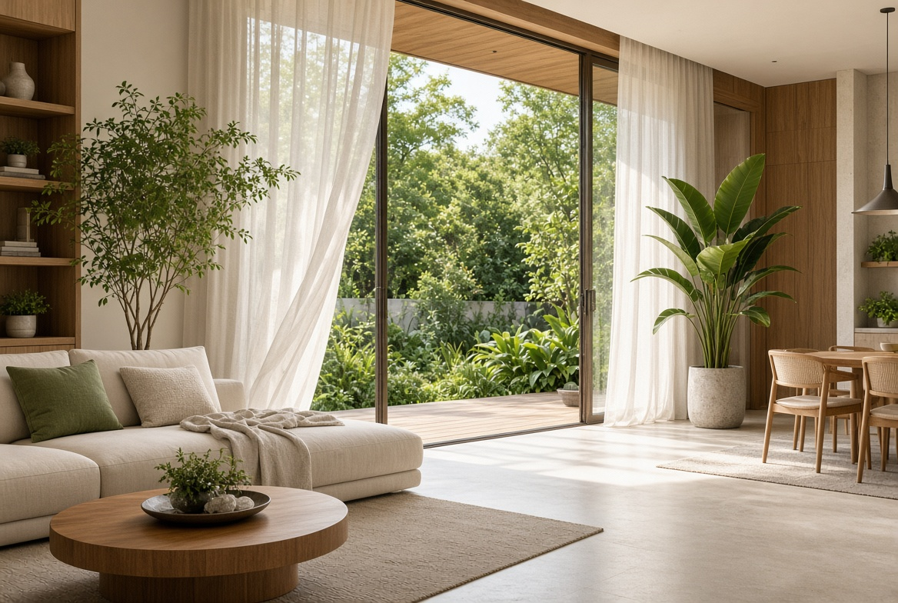

En este artículo
Introducción
Descubre cómo mejorar la privacidad del jardín con plantas, celosías, cercas y una distribución equilibrada que conserve luz y ventilación.
Antes de realizar cambios conviene observar las condiciones reales del espacio, definir qué problema quieres resolver y priorizar las medidas de mayor impacto. Esta planificación evita compras impulsivas y soluciones difíciles de mantener.
En esta guía se mantiene la estructura editorial de Casa & Jardín: introducción, tres bloques principales, consejos prácticos, imágenes internas, preguntas frecuentes y una conclusión útil. Cada recomendación está pensada para aplicarse de forma gradual.
Cuando una intervención implique instalaciones, estructura, trabajos en altura o productos potencialmente peligrosos, utiliza siempre métodos seguros y recurre a un profesional cualificado cuando sea necesario.
Identifica qué zonas del jardín necesitan privacidad
Antes de instalar una valla alta o plantar un seto, conviene identificar exactamente desde dónde llegan las miradas. La privacidad no siempre requiere cerrar todo el perímetro. Puede existir un único ángulo desde una ventana vecina, una calle o una terraza cercana que afecta a la zona donde más tiempo pasas.
Sitúate en los puntos principales del jardín: mesa exterior, tumbonas, zona de juego y puertas de la vivienda. Observa la altura y dirección de las vistas. También puedes pedir a otra persona que se coloque en la calle o en un punto elevado permitido para comprobar qué partes quedan expuestas.
Define el nivel de privacidad que necesitas. Una zona de comedor puede requerir una pantalla parcial, mientras un área de descanso puede beneficiarse de una barrera más densa. Cerrar todo el jardín puede reducir luz, ventilación y sensación de amplitud.
Revisa la normativa local antes de instalar cercas, muros, pérgolas o pantallas. La altura máxima, la distancia al límite y los materiales pueden estar regulados. En comunidades de propietarios también puede existir un criterio estético común.
Considera cómo cambia la privacidad durante el año. Un seto caducifolio puede ofrecer cobertura en verano y quedar mucho más abierto en invierno. Si necesitas intimidad durante todo el año, combina especies perennes con elementos estructurales.
Observa también el viento. Una pantalla completamente sólida puede crear turbulencias y recibir una carga importante durante tormentas. En zonas ventosas, sistemas permeables o vegetación pueden reducir el efecto de vela.
La privacidad debe integrarse con el diseño general. Una solución bien planificada puede además aportar sombra, soporte para trepadoras o fondo para plantas, convirtiéndose en parte útil del jardín y no únicamente en una barrera.
Consejo práctico
Aplica los cambios de forma gradual y observa el resultado antes de continuar. Este método permite identificar qué medida funciona realmente y evita añadir tareas o gastos innecesarios.
Utiliza plantas, setos y trepadoras con criterio
Las plantas son una de las formas más naturales de crear privacidad. Sin embargo, elegir un seto únicamente por su rapidez de crecimiento puede generar mucho mantenimiento. Investiga altura adulta, anchura, ritmo de crecimiento, tolerancia a poda y adaptación al clima.
Los arbustos perennes ofrecen cobertura durante todo el año. Plantarlos con la distancia correcta evita que compitan excesivamente y reduce la necesidad de podas agresivas. Un seto demasiado estrecho para la especie elegida terminará invadiendo caminos o propiedades vecinas.

Las trepadoras son útiles cuando el espacio de suelo es limitado. Una celosía con una especie adecuada puede crear una pantalla vertical sin ocupar tanta anchura. El soporte debe ser resistente al peso adulto de la planta y estar fijado correctamente.
Algunas trepadoras se adhieren directamente a paredes y pueden causar problemas en superficies deterioradas. Antes de plantarlas contra una fachada, investiga su forma de crecimiento y el estado del muro. En muchos casos es mejor utilizar una estructura separada.
Los árboles pequeños pueden bloquear vistas elevadas y aportar sombra. Elige especies cuyo tamaño adulto sea compatible con el jardín y respeta distancias respecto a edificios, tuberías y límites. Plantar un árbol de gran desarrollo demasiado cerca de una vivienda crea problemas futuros.
Las plantas en macetas grandes permiten crear privacidad flexible en terrazas y patios. Bambús no invasivos, arbustos compactos y otras especies pueden funcionar si el recipiente tiene tamaño suficiente y drenaje. Evita especies invasoras y consulta listados locales.
Una composición escalonada con árboles pequeños, arbustos y plantas bajas suele verse más natural que una única pared verde. Además, crea hábitat y mantiene interés visual durante distintas estaciones.
¿Qué debemos tener en cuenta?
Aplica los cambios de forma gradual y observa el resultado antes de continuar. Este método permite identificar qué medida funciona realmente y evita añadir tareas o gastos innecesarios.
Combina estructuras y distribución para una privacidad equilibrada
Las celosías son útiles porque filtran vistas sin bloquear completamente luz y aire. Pueden instalarse sobre una cerca existente si la normativa lo permite o utilizarse como panel independiente. Elige materiales preparados para exterior y sistemas de fijación resistentes al viento.
Las pérgolas pueden aportar privacidad desde puntos elevados mediante paneles laterales, cortinas de exterior o plantas trepadoras. Cualquier elemento textil debe retirarse o asegurarse durante viento fuerte. La estructura necesita una cimentación o fijación adecuada.
Las cercas de madera, metal o materiales compuestos ofrecen distintos niveles de opacidad. Antes de elegir, considera mantenimiento, durabilidad y relación con la arquitectura de la casa. Una cerca muy alta puede hacer que un jardín pequeño se sienta encerrado.
Crear una zona de estar más cerca de la vivienda o en un punto protegido puede ser más sencillo que cerrar todo el perímetro. A veces mover la mesa unos metros detrás de un seto existente resuelve la exposición sin nuevas obras.
Los cambios de nivel también influyen. Una plataforma elevada aumenta las vistas y puede reducir privacidad; una zona ligeramente más baja puede quedar protegida. No modifiques niveles importantes sin estudiar drenaje y estructura.
La iluminación nocturna debe planificarse con cuidado. Una luz intensa dentro del jardín puede hacer que las personas sean más visibles desde el exterior. Utiliza fuentes dirigidas, cálidas y de baja intensidad para mantener ambiente y evitar iluminar toda la parcela.
La solución más equilibrada suele combinar varias capas: una estructura parcial, vegetación y una distribución que aprovecha zonas protegidas. Así se conserva luz, ventilación y sensación de amplitud sin renunciar a intimidad.

Recomendaciones prácticas
Aplica los cambios de forma gradual y observa el resultado antes de continuar. Este método permite identificar qué medida funciona realmente y evita añadir tareas o gastos innecesarios.
Elegir materiales de privacidad que duren en exterior
La madera ofrece una apariencia cálida y puede integrarse fácilmente con vegetación. Sin embargo, necesita un tratamiento adecuado para exterior y revisiones periódicas. La humedad, el sol y los cambios de temperatura pueden provocar grietas, decoloración o deformaciones si el material no está protegido.
El metal puede utilizarse en paneles, celosías o estructuras. Los acabados galvanizados o pintados para exterior ofrecen mejor resistencia a la corrosión, aunque en ambientes costeros conviene revisar con mayor frecuencia. Una estructura metálica puede funcionar como soporte para trepadoras y durar muchos años.
Los materiales compuestos requieren menos mantenimiento y ofrecen una apariencia uniforme. Antes de elegir, comprueba cómo responden al sol, si se calientan demasiado y qué garantía ofrece el fabricante. No todos los productos sintéticos tienen la misma calidad.
Las mallas y tejidos de exterior pueden aportar privacidad temporal en terrazas y pérgolas. Deben estar bien fijados y retirarse durante viento fuerte si el fabricante así lo indica. Un tejido suelto puede actuar como vela y dañar la estructura.
Las cañas, fibras y materiales naturales aportan un aspecto informal, pero pueden deteriorarse más rápido. Funcionan mejor como soluciones temporales o en zonas protegidas. Si buscas una instalación permanente, considera mantenimiento y vida útil.
Diseñar privacidad sin convertir el jardín en un espacio cerrado
La privacidad visual no significa construir una pared completa. En jardines pequeños, bloquear únicamente el ángulo desde una ventana vecina puede ser suficiente. Una celosía de uno o dos metros colocada en el lugar correcto puede ofrecer más intimidad que cerrar todo el perímetro.
Utiliza diferentes alturas. Un seto bajo puede definir límites, mientras un árbol pequeño bloquea vistas elevadas y una pérgola protege una zona de comedor. Esta combinación crea profundidad y evita la sensación de estar dentro de un recinto.
La distancia entre la zona de estar y la pantalla también importa. Colocar una barrera demasiado cerca puede resultar agobiante. Si existe espacio, deja una franja de vegetación o un pequeño recorrido entre la estructura y los muebles.
Los colores oscuros hacen que una pantalla parezca visualmente más profunda y pueden servir como fondo para plantas. Los tonos claros reflejan más luz. Elige según el tamaño del jardín y la cantidad de sombra existente.
La ventilación debe mantenerse. En climas cálidos, una barrera totalmente opaca puede reducir movimiento de aire y aumentar temperatura. Celosías, setos y paneles con pequeñas aberturas ofrecen un equilibrio más cómodo.
Mantenimiento de setos, cercas y pantallas
Los setos necesitan poda según la especie. Un corte demasiado frecuente o severo puede debilitar plantas y aumentar trabajo. Conocer el tamaño adulto y plantar a la distancia correcta reduce la necesidad de controlar continuamente el crecimiento.
Las trepadoras deben guiarse para evitar que alcancen canalones, tejados o estructuras delicadas. Revisa anualmente los soportes y retira ramas secas o excesivamente pesadas. Una planta madura puede ejercer una carga importante sobre una celosía ligera.

Las cercas de madera deben inspeccionarse por pudrición, tornillos flojos y zonas donde el agua se acumula. Renovar el protector cuando corresponde prolonga su vida útil. No esperes a que la madera esté completamente deteriorada.
En paneles metálicos, trata pequeños puntos de corrosión antes de que se extiendan. Las fijaciones también necesitan revisión después de tormentas o periodos de viento fuerte.
Una estrategia de privacidad funciona mejor cuando se evalúa cada temporada. El crecimiento de plantas, cambios en propiedades vecinas o nuevas zonas de uso pueden modificar dónde necesitas protección. Ajustar gradualmente evita construir barreras excesivas.
Soluciones de privacidad según la zona del jardín
En una zona de comedor exterior, la privacidad suele necesitarse a la altura de las personas sentadas. Una pantalla parcial, un seto de altura media o una combinación de celosía y trepadora puede ser suficiente. No es necesario levantar una barrera muy alta si la vista problemática procede de una calle o jardín al mismo nivel.
En una zona de descanso, como tumbonas o un pequeño sofá exterior, puede resultar útil una protección más envolvente. Colocar la zona cerca de una pared existente, una pérgola o un grupo de arbustos reduce el número de elementos nuevos que necesitas instalar.
En piscinas, la privacidad puede estar regulada junto con requisitos de seguridad. No utilices una pantalla que permita trepar fácilmente si existen normas sobre cerramientos. Consulta siempre la legislación local antes de modificar el perímetro.
En jardines delanteros, quizá quieras separar visualmente la vivienda de la calle sin crear una fachada completamente cerrada. Setos bajos, árboles pequeños y cercas permeables pueden mantener relación con el exterior mientras protegen ventanas y zonas de estar.
En terrazas elevadas, las miradas suelen llegar desde otras alturas. Paneles laterales de una pérgola, vegetación alta en macetas o una pantalla colocada estratégicamente pueden bloquear esos ángulos. Revisa siempre el peso y la estabilidad de macetas grandes.
Errores frecuentes al buscar más privacidad
El error más común es cerrar todo el jardín sin estudiar de dónde llegan las vistas. Esto puede reducir luz, ventilación y espacio visual de forma innecesaria. Una solución localizada suele ser más económica y agradable.
Otro error es plantar especies de crecimiento rápido demasiado cerca del límite. Con el tiempo pueden invadir la propiedad vecina, bloquear caminos o exigir podas constantes. Investiga tamaño adulto y respeta distancias recomendadas.
También conviene evitar materiales no diseñados para exterior. Paneles interiores, telas domésticas o maderas sin protección pueden deteriorarse rápidamente y convertirse en un riesgo con viento.
No ignores el mantenimiento. Un seto perfecto en una fotografía puede necesitar varias podas al año. Si tienes poco tiempo, elige una especie de crecimiento moderado o combina vegetación con estructuras.
Finalmente, evita instalar elementos altos sin revisar la normativa. Una cerca que supera la altura permitida puede obligarte a desmontarla después, generando gasto y trabajo innecesarios.
Preguntas frecuentes
¿Qué plantas sirven para dar privacidad en un jardín?
Depende del clima y del espacio. Arbustos perennes, trepadoras y árboles pequeños pueden funcionar si su tamaño adulto y mantenimiento son adecuados.
¿Es mejor una valla sólida o una celosía?
La valla ofrece más bloqueo visual, pero una celosía permite más luz y ventilación. La elección depende del nivel de privacidad y del viento.
¿Puedo usar bambú para privacidad?
Sí, pero conviene elegir variedades no invasoras o cultivarlas en recipientes controlados. Algunas especies se expanden agresivamente.
¿Cómo ganar privacidad sin perder luz?
Utiliza pantallas parciales, celosías, vegetación escalonada y bloquea solo los ángulos realmente expuestos.
¿Necesito permiso para instalar una cerca alta?
Puede ser necesario. Consulta normativa local y reglas de la comunidad antes de construir.
Conclusión
Cómo mejorar la privacidad del jardín sin perder luz ni espacio funciona mejor cuando las decisiones parten de las condiciones reales del espacio y pueden mantenerse con una rutina sencilla.
La constancia suele ofrecer mejores resultados que las intervenciones intensas realizadas solo cuando aparece un problema.
Revisa el resultado después de varias semanas y ajusta únicamente aquello que siga siendo incómodo, poco práctico o difícil de mantener.
Con planificación y mantenimiento preventivo es posible conseguir un resultado más cómodo, funcional y duradero.